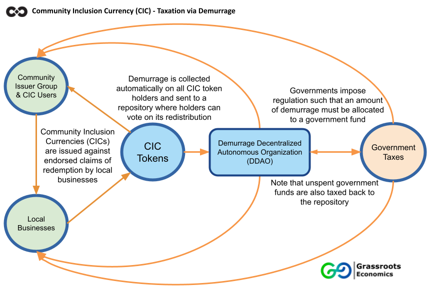

Taxation & Community Currencies

This is a touchy topic! One that is the last thing a lot of community currency designers often want to think about, yet the first question they are asked.
While in most regulatory regimes, right now, a community currency (CCs) is nothing more than a tradable voucher. Taxation on these vouchers is similar to trading any crypto currency - a grey area at best. When exchanging CCs or any crypto currency for National Currency is when you begin to enter the current tax regimes. I say current, because things change fast in this space and actively thinking about how taxes could or should be imposed, collected and redistributed is extremely important. Below are some concepts on taxation of CCs that should be considered.
Community Currencies are about giving people the right to issue their own credit and use it as a medium of exchange - often filling the gaps left by low liquidity and hoarding of national currency. There is an obvious tension here with governments seeing CC trade as productive activity and/or utilization of public services, going un-taxed.
Generally community currency creators don't want to end funding to governments that provide useful services but we do want to make sure people have a say in how taxes are spent! In the case of Grassroots Economics - we are a non-profit foundation trying to provide a way for people to live together without the constant fear and trauma of monetary scarcity.
Demurrage on currency is a simple concept: currency decay over time (such as holding tax as a percentage deducted from all balances). This idea was created by the economist Silvio Gesell and first implemented Austrian town of Wörgl in 1932 with great success. It was created in order to reduce hoarding and encourage people to invest in local productive capacity - leaving currency as a medium of exchange and less of a form of savings. Rather than using paper currency and the purchase of stamps to keep your currency valuable, as was done in the 1930's we can use modern technology such as blockchain to create complete transparency and automation of tax collection. To use demurrage as taxation digitally today - this holding tax can be collected automatically using blockchain smart contracts and deposited into a public contract or Demurrage decentralized Autonomous Organization (DDAO). Anyone holding the currency would have a right to vote on the DDAO to determine where their demurrage goes. Governments could regulate these DDAO contracts to ensure a percentage goes to them - and they as well would be taxed on any unspent funds.
In the above diagram you can see a community creating a Community Inclusion Currency (CIC) as a claim against their future production. Such a CIC could also be issued by a government or municipality as in the case of Wörgl against redemption in government services. These CIC tokens could intrinsically be taxable into a DDAO and a portion could go to local government while the rest goes back to the CIC users themselves. The CIC collected by government would have to be used or be taxed back into the DDAO and be again redistributed. This creates a virtuous cycle where local taxes are automatically collected and must be re-spent locally. Such a CIC tax could even be reissued by government as a basic income. Social service organizations and charities could show their CIC transaction volumes in order to convince the public and government to allocate (vote) CIC tax redistribution to them.
Rather than only allowing banks and government to create our money supply - CICs give an option to decentralize credit issuance while preserving the functions of government to collect taxes and support social services. Governments - both local and national - that understand the power of credit decentralization and automated taxation, should see that this could be the largest and most sustainable funding source imaginable especially in countries like Kenya where the vast majority of businesses are informal and paying no taxes at all.
In the above video the Red Cross has introduced a CIC into a sub-county of Mombasa. Every token (Sarafu) has a 2% a monthly demurrage (holding tax) that currently collected automatically and is redistributed to active users in the community. Over 3 Million USD of trade has happened on this network and nearly 20 Million Sarafu tokens have been issued nation wide to over 56,000 households. If the county or national government were to accept locally created credit for local taxation via automated demurrage it could pay for roads, schools, health services and even basic income to support those in need.
For policy makers wanting to understand more contact us.
For developers - wanting to see a blockchain implementation of demurrage please check out our ERC20 contracts here.